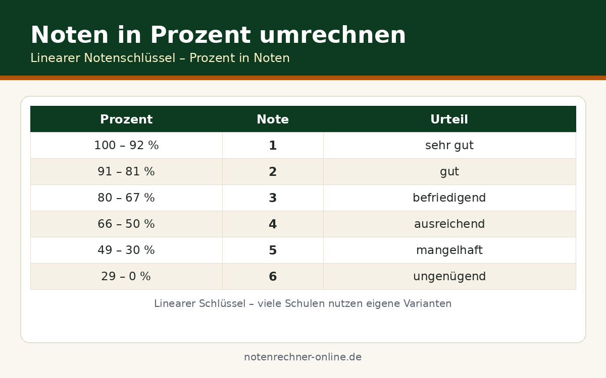

Prozentgewichtung umrechnen: 40/30/20 richtig rechnen
40 % Klausur, 30 % Test, 20 % Mündlich – und jetzt? Prozentgewichte wirken auf den ersten Blick komplizierter als einfache Faktoren, sind aber exakt dasselbe Prinzip. Wir von Notenrechner Online zeigen, wie Sie Prozentgewichte in Faktoren umrechnen, warum der 100-%-Check unverzichtbar ist und wie das Kürzen von Verhältnissen das Kopfrechnen erleichtert.
Von Prozent zum Faktor: so rechnen Sie um
Die Umrechnung ist ein einziger Rechenschritt: Die Prozentzahl wird durch 100 geteilt. Aus 40 % wird 0,4, aus 35 % wird 0,35 und aus 25 % wird 0,25. Mit diesen Dezimalfaktoren rechnen Sie dann ganz normal weiter – jede Note mal ihren Faktor, alles addieren, fertig. Die Division durch die Summe der Gewichte entfällt, weil sich die Faktoren bereits zu 1 addieren.
oder direkt: (Note₁ × 40 + Note₂ × 35 + Note₃ × 25) ÷ 100
Beide Wege führen zum identischen Ergebnis – wir nutzen meist die Faktoren, weil sich das am Taschenrechner schneller tippt. Wer lieber mit ganzen Zahlen arbeitet, rechnet mit den Prozentzahlen und teilt am Ende durch 100.
Der 100-%-Check: der häufigste Fehler
Was tun, wenn die Summe nicht 100 ergibt?
Zuerst klären wir, ob eine Leistung schlicht fehlt – etwa die Hausaufgabenkontrolle mit den fehlenden 10 %. Lässt sich der fehlende Anteil nicht zuordnen, hilft das Normieren: Jeder Anteil wird durch die tatsächliche Summe geteilt. Aus 40 : 30 : 20 wird 40/90 ≈ 0,444, 30/90 ≈ 0,333 und 20/90 ≈ 0,222 – die Verhältnisse bleiben erhalten und die Summe stimmt wieder. Normieren ist ein Notbehelf, kein Ersatz für die korrekte Gewichtung: Die verbindlichen Werte stehen in der Schulordnung oder beim Lehrer.
Verhältnisse kürzen – die Profi-Methode
Gleiche Verhältnisse lassen sich beliebig kürzen, ohne das Ergebnis zu verändern. 40 : 20 : 10 wird zu 4 : 2 : 1, 50 : 30 : 20 zu 5 : 3 : 2 und 40 : 30 : 30 zu 4 : 3 : 3. Wir teilen dazu alle Gewichte durch ihren größten gemeinsamen Teiler – bei 40/20/10 ist das die 10. Der Vorteil: kleine ganze Faktoren lassen sich im Kopf multiplizieren, während 0,4 und 0,2 den Taschenrechner verlangen. Für den gewichteten Notenschnitt ist nur das Verhältnis entscheidend, nicht die absolute Höhe der Gewichte.
Durchgerechnetes Beispiel mit drei Leistungen
Klausur: Note 2 mit 40 %, Test: Note 3 mit 35 %, mündliche Mitarbeit: Note 1 mit 25 %. Der 100-%-Check zuerst: 40 + 35 + 25 = 100 – passt.
| Leistung | Note | Gewicht | Faktor | Note × Faktor |
|---|---|---|---|---|
| Klausur | 2 | 40 % | 0,4 | 0,80 |
| Test | 3 | 35 % | 0,35 | 1,05 |
| Mündlich | 1 | 25 % | 0,25 | 0,25 |
| Summe | – | 100 % | 1,0 | 2,10 |
Kostenlose Spickzettel & Tabellen zum Download
Wir haben die wichtigsten Formeln und Tabellen für dich als kostenlose PDFs aufbereitet – ausdrucken, ins Heft kleben, fertig. Alle Downloads sind gratis und ohne Anmeldung.


Häufige Fragen zur Prozentgewichtung
Kann ich direkt mit den Prozentzahlen rechnen, ohne umzuwandeln?
Ja: (Note₁ × 40 + Note₂ × 35 + Note₃ × 25) ÷ 100 führt zum selben Ergebnis. In unserem Beispiel: (80 + 105 + 25) ÷ 100 = 210 ÷ 100 = 2,10. Die Faktormethode ist nur bequemer, weil die Division am Ende entfällt.
Was mache ich, wenn die Gewichte nur 90 % ergeben?
Zuerst prüfen, ob eine Leistung fehlt – das ist die häufigste Ursache. Erst wenn sich der fehlende Anteil nicht zuordnen lässt, normieren wir: jeden Anteil durch 90 teilen (40/90, 30/90, 20/90). Verbindlich bleiben die Werte aus Schulordnung oder Lehreransage.
Warum sollte ich Verhältnisse kürzen?
Kleine ganze Zahlen sind kopfrechenfreundlicher als Dezimalfaktoren: 4 : 2 : 1 lässt sich ohne Taschenrechner multiplizieren. Das Ergebnis ändert sich nicht – entscheidend ist nur das Verhältnis der Gewichte zueinander.
Wann runde ich bei der Prozentrechnung?
Erst ganz am Ende. Zwischenergebnisse wie 1,05 oder 0,333… führen wir ungerundet weiter; erst der fertige Schnitt wird auf zwei Nachkommastellen gerundet. Frühzeitiges Runden verfälscht besonders bei kleinen Gewichten spürbar.
Woher weiß ich, welche Prozentgewichtung für mein Fach gilt?
Die Schulordnung oder die Lehrkraft nennt die verbindlichen Werte. Faustregel für die Schule: schriftliche Leistungen doppelt, mündliche einfach. Wie Gewichte grundsätzlich funktionieren, erklären wir auf unserer Seite zum gewichteten Notenschnitt.
Prozentgewichtung jetzt umrechnen lassen
Noten und Prozentgewichte eintragen – unseren kostenlosen Notenrechner nutzen und die Rechnung samt 100-%-Check automatisch erledigen lassen. Alle Rechner finden sich auf https://notenrechner-online.de/.
Gewichtung berechnen